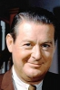

Country:United States, 99 minutes
Spoken languages:
Genres:Crime, Mystery
Director(s):Byron Haskin
Writer(s):Roy Huggins
Video Codec:Unknown
Number: 1761


Certification:
Storyline:
One night on a lonely highway, a speeding car tosses a satchel of money, meant for somebody else, into Jane and Alan Palmer's back seat. Alan wants to turn it over to the police, but Jane persuades him to hang onto it 'for a while'. Soon, the Palmers are traced by one Danny Fuller, a sleazy character who claims the money is his.
Cast: 


Medium: Original DVD,
Comments: Part of: Mystery Classics - 50 Movie Pack
Loaned: No
Aspect ratio: Unknown